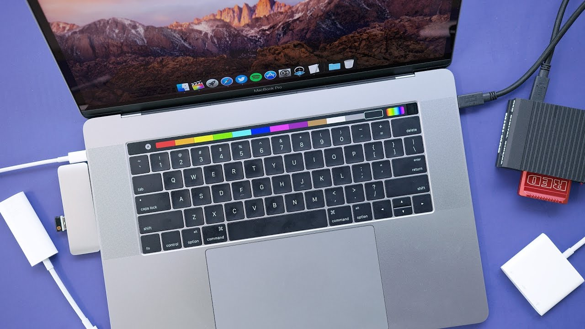
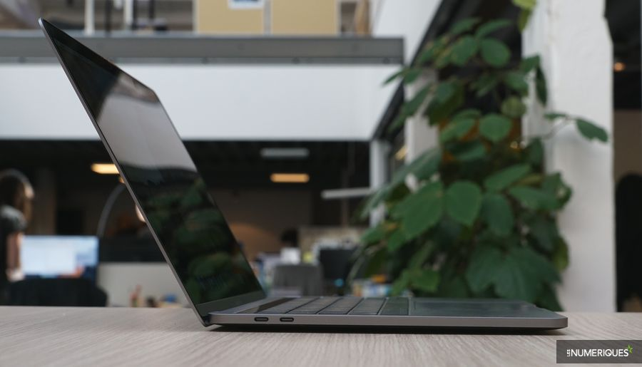
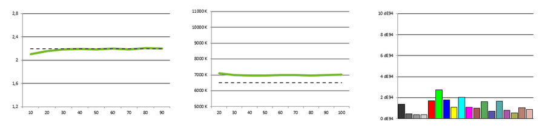
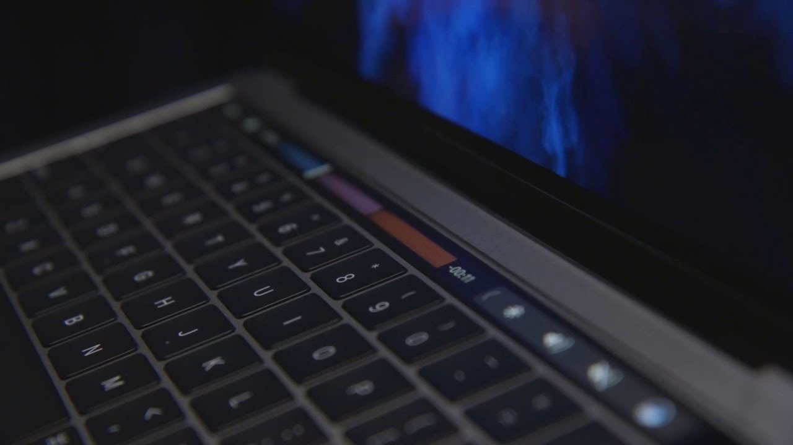

Apple MacBook Pro avec touchbar
Note
9,2/10
Où acheter le le nouveau Apple MacBook Pro au meilleur prix ?
INTRODUCTION
Si vous êtes à la recherche du dernier ordinateur portable d’Apple, nous vous suggérons de choisir le Macbook Pro 13 pouces avec Touch Bar. Bien que Microsoft affirme que sa Surface Book 2 est deux fois plus puissante que le MacBook Pro d’Apple, il est aussi plus cher au niveau du prix de départ. Bien sûr, la caractéristique principale est la Touch Bar — il s’agit d’un affichage OLED en haut du clavier qui peut être utilisé pour un grand nombre de choses, qu’il s’agisse de la suggestion automatique de mots au fur et à mesure que vous tapez, ou de l’identification tactile Touch ID pour que vous puissiez vous connecter uniquement avec votre empreinte digitale. Si vous êtes un grand fan du Macbook Pro 2017, vous serez satisfait de ce modèle, mais il y a de sérieuses raisons pour lesquelles vous devriez envisager l’une des alternatives Windows. Comme nous l’avons déjà dit, il n’est pas si puissant, l’écran est moins résistant que celui de la concurrence et il n’est pas tactile. La batterie est quant à elle un peu décevante. Donc, si vous êtes prêt à passer sur PC, considérez le XPS 13 comme une alternative plus moderne et moins chère. Mais, si vous êtes un fan inconditionnel et fidèle d’Apple, c’est certainement le meilleur ordinateur portable pour vous !
DESIGN
Difficile de reprocher quoi que ce soit au MacBook Pro en matière de construction : Apple maîtrise sa partition à la perfection. On retrouve ainsi le design si simple mais si propre à la marque, et le boîtier "unibody" fait d'aluminium, ici d'une épaisseur de 15 mm..
Petit détail à noter sur le design général, l’appareil intègre une encoche. Non, ne vous inquiétez pas ! On ne parle pas ici de l’écran, mais plutôt d’une encoche sous le touchpad, qui permet d’ouvrir très facilement le PC..
sécurité
Puce Apple T2 Security La sécurité nouvelle génération. Voici la puce Apple T2 Security, une puce en silicium pour Mac de deuxième génération conçue spécialement par Apple pour rendre le MacBook Pro encore plus sûr. Présente sur les modèles 13 et 15 pouces avec Touch Bar, la puce Apple T2 Security intègre un coprocesseur Secure Enclave qui est à la base même des capacités de démarrage sécurisé et du stockage chiffré. Elle fédère également de nombreux contrôleurs distincts en un seul, notamment le contrôleur de gestion du système, le contrôleur audio et le contrôleur SSD.


Le touchpad est une vraie réussie. Rares sont les appareils sous Windows à intégrer un pavé aussi large et aussi agréable à utiliser, surtout pour un PC aussi compact. La glisse est agréable et les deux boutons répondent bien. Il s’agit bien sûr d’un pavé tactile de précision, ce qui signifie qu’il s’intègre très bien à Windows 10 et aux raccourcis tactiles du système (glisser avec deux doigts pour faire défiler par exemple).
On regrette simplement qu’il n’y ait aucun lecteur de carte pour étendre facilement le stockage interne, ou vider rapidement la carte d’un appareil photo. Il aurait également était plus intéressant de répartir les ports USB Type-C sur chaque côté de la machine, pour pouvoir brancher son appareil dans toutes les situations.
ECRAN
Apple a toujours soigné ses écrans, en particulier le respect des couleurs ; l'écran du MacBook Pro 13 (2017) ne déroge pas vraiment à cette règle, malgré quelques défauts évidents.Il s'agit ici d'une dalle IPS de 13,3 pouces (33,8 cm de diagonale) d'une définition de 2 560 x 1 600 px. Bien qu'Apple ne mise pas sur des bords d'écrans ultra-fins, le ratio écran/façade reste tout de même très élevé puisqu'il est de 82,64 %.

Sous notre sonde, le MacBook Pro 13 (2017) livre des résultats très satisfaisants, malgré un taux de contraste décevant de 970:1 (pour la vision des nuances de gris) et une température de 7 000 K, légèrement au-dessus de la norme à 6 500 K et signe d'une légère dérive vers le bleu. Le reste en revanche est très bon, à commencer par le delta E. Non seulement il atteint l'excellente moyenne de 1,2, mais surtout il livre un tableau quasi parfait : pas une seule teinte ne dépasse le seuil de 3, au-delà duquel l'œil humain peut percevoir une différence entre la couleur affichée et la couleur réelle. Les photographes et les graphistes pourront travailler sans crainte sur l'ordinateur en profitant de couleurs extrêmement fidèles.
Perfamance
Le MacBook Pro 13 (2017) avec Touch Bar est équipé d'un processeur Intel Core i5-7267U à 3,1 GHz (7e génération Kaby Lake) épaulé, sur notre modèle de test, par 8 Go de RAM. Une configuration classique en somme pour un ultraportable qui se hisse au niveau de la concurrence.

Avec le MacBook Pro, l’ordinateur portable atteint des sommets inédits en matière de performances et de portabilité. Quelles que soient les contrées où vous mènera votre imagination, vous parviendrez plus vite que jamais à vos objectifs grâce, entre autres, à des processeurs et à une mémoire hautes performances, à des graphismes avancés et à un système de stockage d’une rapidité fulgurante.
Touchbar
La Touch Bar remplace les touches de fonction qui trônaient au sommet de votre clavier par un dispositif beaucoup plus ingénieux et polyvalent16. Selon ce que vous faites, elle affiche automatiquement les outils dont vous avez besoin et que vous savez déjà utiliser : des commandes système comme le volume et la luminosité, des moyens interactifs de parcourir et peaufiner des contenus, des fonctionnalités de saisie comme les emoji, et plus encore.

Fiche technique
| Modèle | Apple MacBook Pro |
|---|---|
| Type(s) | Ultra portable et Tablet PC |
| Processeur | Intel Core i (7-5-3) 8éme genération "HQ" |
| Fréquence du processeur | 2.9 GHz |
| Type de mémoire vive | DDR3L-SDRAM |
| Capacité de stockage principal | 256 à 1 TB Go |
| Type de stockage principal | SSD |
| Seconde baie disque | Non |
| Lecteur optique | Non |
| Résolution WebCam | 0,9 Mpx |
| Taille d'écran | 15.4 " |
| Format de l'écran | 16:10 |
| Tactile | Non |
| Définition de l'écran | 2880 x 1800 pixels |
| Aspect de l'écran | Brillant |
| Processeur graphique | AMD Radeon Pro 560 |
| Quantité de mémoire graphique | 4096 Mo dédiée |
| Ports Thunderbolt | 4 |
| Support du NFC | Non |
| Système audio embarqué | Stéréo |
| Support du Wi-Fi | Wi-Fi 802.11ac |
| Support du Bluetooth | Bluetooth 4.2 |
| Capacité de mémoire vive | 16 Go |
| Système d'exploitation | Mac OS X 10.12 (Sierra) |
| Poids (batterie incluse) | 1.312 kg |